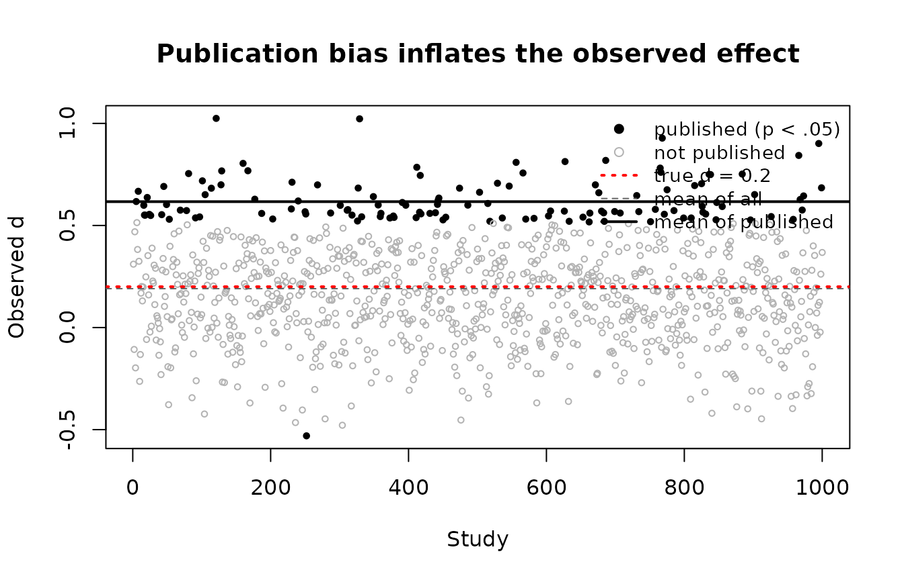

Planning Replication Studies
Ken Kelley, Samantha F. Anderson, and Scott E. Maxwell
Source:vignettes/planning-replications.Rmd
planning-replications.RmdThis vignette is adapted from a graduate seminar exercise. It builds up, step by step, the problem that BUCSS exists to solve: when a research literature is built from underpowered studies, the effect sizes that get published are systematically too large, so a replication planned from a published result is itself underpowered, often badly. We first reproduce that problem with a small simulation, then show how the bias and uncertainty correction repairs the sample size plan.
A Literature Built From Underpowered Studies
Imagine a true effect that is real but small. Many laboratories run a two-group experiment to detect it, each with a modest sample size, and (as is the norm) only the statistically significant results find their way into print. We can watch this happen by simulating it.
The true standardized mean difference is d = 0.2
(Cohen’s “small”). Each study uses 30 participants per group. We run
1000 such studies and keep track of which ones reach
p < .05.
set.seed(2017)
true_d <- 0.2 # the true (small) population effect
n <- 30 # participants per group in each study
G <- 1000 # number of studies the field runs
studies <- replicate(G, {
control <- rnorm(n, mean = 0, sd = 1)
treatment <- rnorm(n, mean = true_d, sd = 1)
tt <- t.test(treatment, control, var.equal = TRUE)
# For equal n per group, Cohen's d = t * sqrt(2 / n).
c(t = unname(tt$statistic), p = tt$p.value,
d = unname(tt$statistic) * sqrt(2 / n))
})
studies <- as.data.frame(t(studies))
studies$published <- studies$p < .05How often does a single study detect this effect? That is just its statistical power, and it is low:
power.t.test(delta = true_d, n = n, sig.level = .05)$power
#> [1] 0.1154342
mean(studies$published) # the simulated proportion that "got published"
#> [1] 0.126About one study in nine reaches significance. Now compare the average effect size across all studies with the average across only the published ones:
c(all = mean(studies$d),
published = mean(studies$d[studies$published]))
#> all published
#> 0.1904788 0.6166919The average across all studies sits near the truth of 0.2. The average across published studies is far larger, because a small study can only clear the significance filter when its sample effect happens to land high. The filter does not select for true effects; it selects for large estimates. This is publication bias, and the figure makes it vivid.

The published effects (filled points) are a biased sample of the truth: their average (solid line) is well above the true value (dashed red line). A reader of this literature sees only the filled points and naturally concludes the effect is much larger than it is.
Why Planning at Face Value Underpowers the Replication
Now put yourself in the position of a researcher who wants to
replicate one of these published findings. Suppose the published study
you are working from used 25 participants per group and reported
t = 2.52. Taken at face value, that implies a healthy
effect size:
t_obs <- 2.52
n_prior <- 25
d_face <- t_obs * sqrt(2 / n_prior)
d_face
#> [1] 0.7127636If you plan a replication for 80% power using that face-value effect, you need only a modest sample:
n_naive <- ceiling(power.t.test(delta = d_face, power = .80, sig.level = .05)$n)
n_naive
#> [1] 32But the effect was never really that large; it is one of the inflated
published estimates. If the truth is d = 0.2, the power
your replication actually has at that sample size is dismal:
power.t.test(delta = 0.2, n = n_naive, sig.level = .05)$power
#> [1] 0.1205391You planned for 80% power and bought yourself about 12%. Planning at face value does not just lose a little power; it leaves the replication almost as underpowered as the original. A field that plans this way keeps running studies that cannot succeed.
The BUCSS Correction
BUCSS breaks this cycle. Instead of trusting the published effect, it
treats the published test statistic as a draw from a truncated
distribution, truncated because only significant results were
publishable, and corrects for both the publication bias and the sampling
uncertainty before planning. The same prior study, run through
ss_buc_independent_t(), asks for a very different sample
size.
We use assurance = .50 first. An assurance of .50
corrects for publication bias only: it asks for the sample size that
gives the target power on average across replications.
ss_buc_independent_t(t_observed = 2.52, n = 25,
alpha_prior = .05, alpha_planned = .05,
assurance = .50, desired_power = .80)| term | value |
|---|---|
| necessary_n_per_group | 109 |
| total_N | 218 |
| actual_power | 0.801 |
| ncp_adjusted | 1.35 |
| t_observed | 2.52 |
| n | 25 |
| alpha_prior | 0.05 |
| alpha_planned | 0.05 |
| assurance | 0.5 |
| desired_power | 0.8 |
Design: Independent t test; Sample size unit: per group; Largest supportable assurance: .69
Even correcting for publication bias alone, BUCSS calls for far more participants per group than the naive plan of 32. The face-value plan was not cautious; it was wishful.
Raising the assurance above .50 also corrects for uncertainty: it asks for the sample size that will reach the target power not just on average but in a stated proportion of replications. With a prior study this small, however, asking for high assurance reveals a hard truth. The original study simply did not carry enough information, and BUCSS says so rather than returning a falsely precise number:
ss_buc_independent_t(t_observed = 2.52, n = 25,
alpha_prior = .05, alpha_planned = .05,
assurance = .80, desired_power = .80)
#> Error:
#> ! Sample size planning is not possible with these settings. After correcting the prior study's effect for publication bias and uncertainty at the requested level of assurance, the corrected noncentrality parameter is zero, which means there is not enough information in the prior result to plan the sample size as desired. With this prior result and 'alpha_prior', the largest 'assurance' that still yields a usable plan is about .69; re-run with 'assurance' at or below that value, or raise 'alpha_prior' to lift the ceiling. Re-running at a lower 'assurance' is not free: the plan it returns carries that lower assurance, not the one you first asked for, so the long run proportion of replications reaching your target power falls accordingly. 'alpha_prior' does not change the prior study, which is what it is; it is your assumption about the publication threshold the study's literature faced, so raising it toward 1 assumes less publication bias to undo (for example, 'alpha_prior = .10' assumes the literature's journals would have published a result significant at the .10 level, a more lenient policy than .05, and 'alpha_prior = 1' assumes no publication bias at all). See Anderson, Kelley, and Maxwell (2017) and Anderson and Kelley (2024).The message is itself the lesson: an underpowered original study
cannot anchor a high-assurance replication. It tells you the largest
assurance this prior can support and the two levers you can pull (lower
the assurance, or raise alpha_prior to assume the
literature filtered less aggressively), so you can make an informed,
minimal adjustment rather than a blind one. A well-powered original
study would support assurance of .80 or .95 comfortably; this one does
not, and that is worth knowing before you collect data.
Reading and Using the Result
Every ss_buc_* function returns a tidy object. Print it
for a readable summary, or pull the pieces out programmatically:
plan <- ss_buc_independent_t(t_observed = 2.52, n = 25, assurance = .50)
tidy(plan)
#> term estimate power
#> 1 sample_size 109 0.8013533
tidy(plan)$estimate
#> [1] 109The classic dotted name still works for scripts written against earlier versions of BUCSS, and the first two elements of the result remain the sample size and the adjusted noncentrality parameter, exactly as they were:
legacy <- suppressWarnings(ss.power.it(t.observed = 2.52, N = 50, assurance = .50))
legacy[[1]] # necessary sample size per group
#> [1] 109(Calling the dotted name once per session also prints a deprecation
note pointing to ss_buc_independent_t(); new code should
use the new name.)
The Bigger Picture
Detecting the effect again is only one possible goal of a replication. Anderson and Kelley (2024) describe four, each with its own sample size logic: inferring that the effect exists (the goal above, served by BUCSS), inferring that the effect is so small it is essentially null (equivalence testing), estimating the effect’s magnitude precisely (accuracy in parameter estimation, as in the MBESS package), and planning the next study to sharpen a running meta-analytic estimate. The common thread is that the design choice comes first: decide what a successful replication would mean, then plan the sample size for that, and never take a published effect size at face value.
References
Anderson, S. F., & Kelley, K. (2024). Sample size planning for replication studies: The devil is in the design. Psychological Methods, 29, 844–867. https://doi.org/10.1037/met0000520
Anderson, S. F., & Maxwell, S. E. (2017). Addressing the “replication crisis”: Using original studies to design replication studies with appropriate statistical power. Multivariate Behavioral Research, 52, 305–324.
Anderson, S. F., Kelley, K., & Maxwell, S. E. (2017). Sample-size planning for more accurate statistical power: A method adjusting sample effect sizes for publication bias and uncertainty. Psychological Science, 28, 1547–1562. https://doi.org/10.1177/0956797617723724
Maxwell, S. E., Delaney, H. D., & Kelley, K. (2027). Designing experiments and analyzing data: A model comparison perspective (4th ed.). Routledge.
Taylor, D. J., & Muller, K. E. (1996). Bias in linear model power and sample size calculation due to estimating noncentrality. Communications in Statistics: Theory and Methods, 25, 1595–1610.